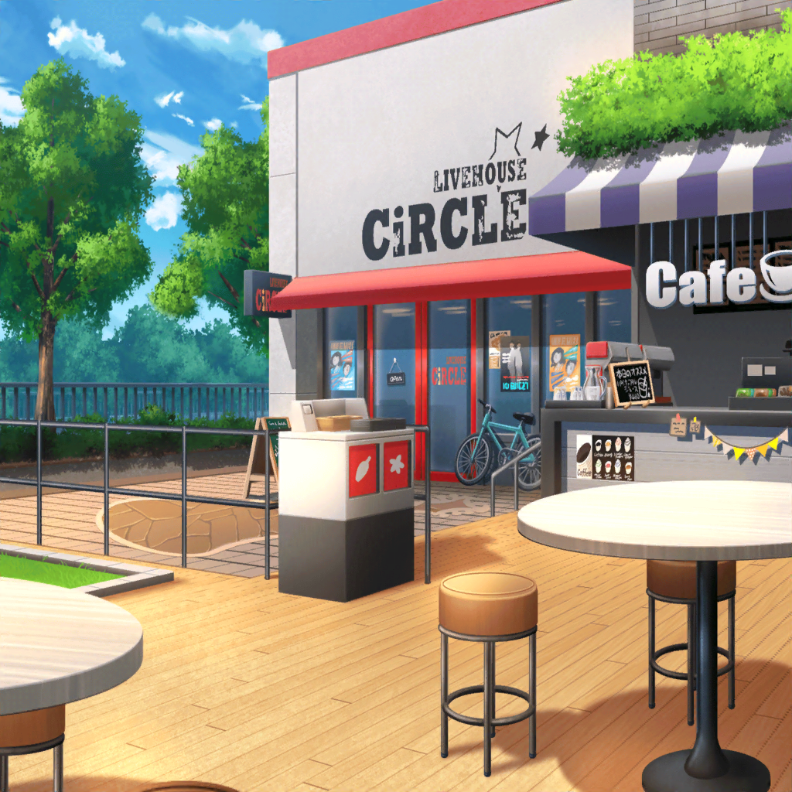

CiRCLE앞 카페
카논
미안해, 미사키 짱.
갑자기 불러내게 됐네.
미사키
아니에요. 오늘은 밴드 연습도 없으니까요……
그런데 카논 씨가 먼저 불러주다니 신기하네요.
무슨 일 있어요?
카논
저기, 미사키 짱.
잠깐 이거 보여주고 싶었거든……
미사키
아, 양모 펠트네요?
카논 씨도 양모 펠트 시작한 거에요?
카논
응, 전에 만드는 방법 조금 알려준 적 있었잖아?
그래서 나도 해 보려고 생각해서 시작했는데……
그게 잘 안되더라……
미사키
어디, 이건……고래인가요?
카논
이, 일단은 돌고래를 만드려고 했었는데……
입이 뾰족히 튀어나온 느낌을 살리기 어려웠거든……
미사키
아~ 그런 세세한 부분은 어렵긴 하죠.
이 입 주변을 반대쪽부터 바늘로 들어가보면……
……자, 이런 느낌으로요.
카논
아, 그렇구나. 그 쪽부터 하면 되는구나.
역시 난 아직 멀었네……
혼자서 제대로 끝까지 할 수 있을지 조금 걱정돼……
미사키
괜찮아요.
조금씩 해나가면 되니까요.
해보면 자연스럽게 마음도 평온해지고 말이죠.
카논
그치만, 나는 정말 손재주가 없다니까……
코코로
저기, 무슨 일이야 카논!?
어금니 사이에 고기가 끼어있는 것 같은 표정을 하다니!
카논
아, 코코로 짱!
미사키
아……
평온함과는 정반대인 사람이 등장했네……
코코로
저기, 하구미랑 카오루도 이 쪽으로 와 봐!
역시 두 사람은 여기 있었어!
하구미
역시 코코롱!
코코롱이 말한 건 틀린적이 없다니까!
카오루
이런 곳에 있었구나, 아기 고양이들.
정말이지 너희는 실이 끊어진 풍선처럼
어디론가 날아가버린단 말이지……
미사키
게다가 결국 전부 모여버렸네.
카논
……왜, 왜 그러니, 코코로 짱?
우리를 찾고 있던거야?
코코로
물론 찾고 있었어!
왜냐하면 지금부터 즐거운 일을 할 거니까
사람이 많은 쪽이 당연히 좋잖아!
미사키
……뭐? 즐거운 일……이라니 뭘 할건데?
코코로
그걸 지금부터 찾을거야!
하구미
와앗!
코코롱, 그거 엄청 좋은 생각같아!
재밌는 걸 찾는다니 재밌을 거 같아~♪
카오루
코코로……
너의 탐구심에는 정말로 두 손 다 들었어.
미사키
하아……
오자마자 그렇게 갑자기 대화해봤자
따라갈 수가 없는데 말야……
코코로
자아, 얘들아 출발하자!
카논도 어금니에 낀 고기에 대한 건 잊는 게 좋아!
분명 언젠가 빠질거니까!
카논
저, 저기, 코코로 짱……
딱히 어금니에 고기 끼어있는 거 아니야.
코코로
그럼 어금니에 뭐가 끼어있는거야?
미사키
아무것도 낀 거 없다니까……
이야기를 조금은 들어주라.
코코로
알았어! 카논 이야기라면 실컷 듣고싶어!
이왕이면 재밌는 이야기가 좋겠어!
카논, 재밌는 이야기 해 줘!
카논
저, 저기……즐거운 이야기일지는 나도 잘 모르겠는데……
얼마 전에 미사키 짱이 양모 펠트 만드는 방법을 알려줘서
잠깐 해 봤는데……마음대로 잘 되지 않았거든.
코코로
굉장하다! 카논은 새로운 걸 시작했구나!
무척 재밌는 이야기라고 생각해!
하구미도 그렇게 생각하지!?
하구미
응!
카노 짱 선배가 새로운 걸 시작했다는 이야기를 들으니
하구미도 기뻐진다구!
카오루
그 셰익스피어도 이렇게 말했지.
「행동은 웅변이다」……라고 말이야.
미사키
너무 호들갑스럽다니까.
양모 펠트 만드는거 뿐이래도~
하구미
볼래 볼래!
카노 짱 선배가 만든 거, 하구미한테도 보여줘!
카논
그, 그러니까……
이런 느낌……인데……
코코로
엄청 잘 만들었네! 이건 분명 애벌레구나!
지금 당장이라도 움직일것처럼 보여!
카논
저, 저기……애벌레가 아니라……
일단은 돌고래인데……
코코로
카논이 열심히 만든거라면
그게 뭐든 멋진거야!
나는 이 돌고래가 엄청 마음에 들었어!
코코로
아! 지금 엄청 재밌을거 같은 게 떠올랐어!
지금부터 같이 진짜 돌고래 보러 가자!
미사키
뭐어!?
왜 그렇게 되는건데?
코코로
왜냐하면 카논이 만든 돌고래를 보고 있으니까
진짜 돌고래를 보고 싶어졌어!
그 돌고래는 그만큼 생생하게 보이는걸!
미사키
하아……
그거, 애벌레랑 착각했던 사람이 할 소리가 아니래도.
하구미
와~! 그거 재밌겠다~! 갈래 갈래!
하구미는 꼭 가고싶어~♪
카오루
코코로……너는 또 한번 나를 놀래켰어.
어디에서 그런 멋진 발상이 생겨나는거지?
코코로
자, 오늘이라고 하는 멋진 날이 끝나기 전에 출발하자!
그야 오늘은 한 번밖에 없으니까!
미사키
……하아.
이렇게 된 마당에야, 이젠 따라갈 수 밖에 없겠네~
카논 씨도 괜찮겠어요?
카논
……으, 응.
나는 너희하고 함께 가는거니까……
코코로
후후후!
그러면 얼른 렛츠 고!